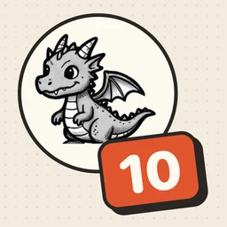
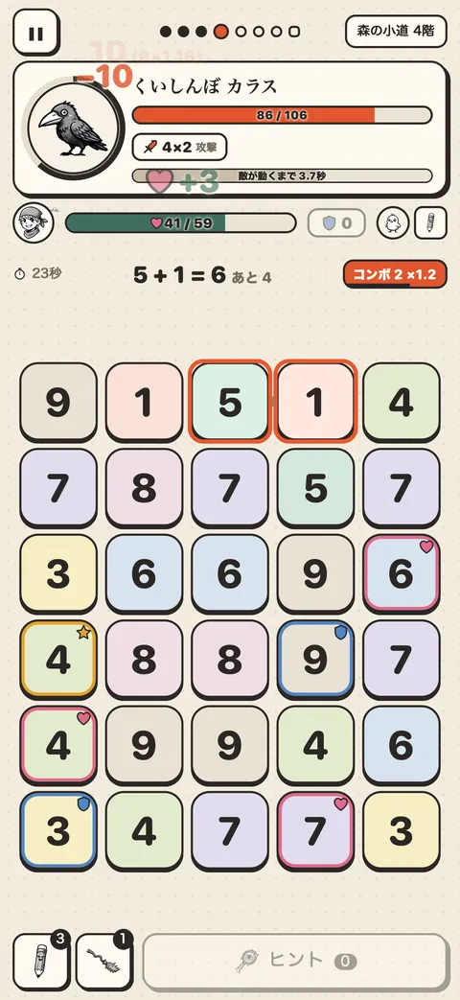
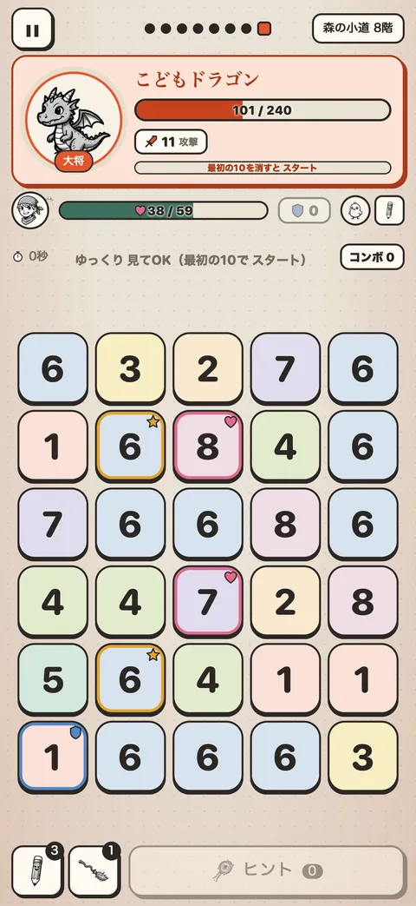
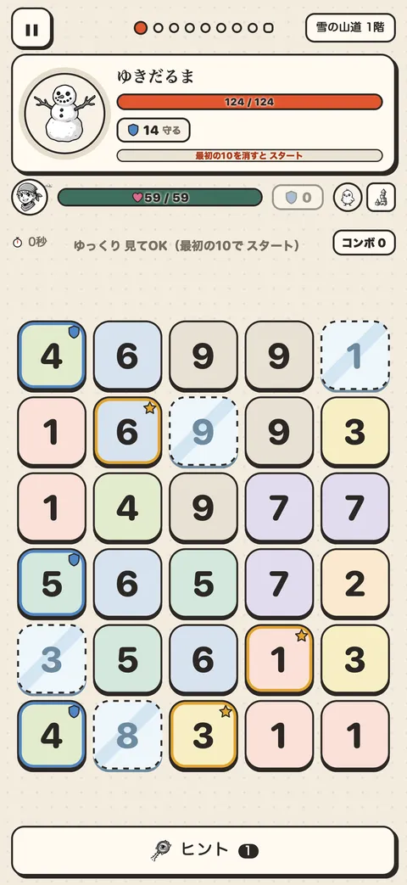
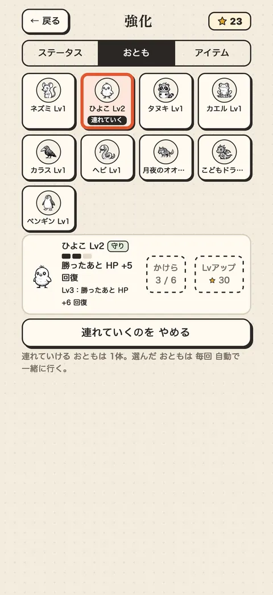
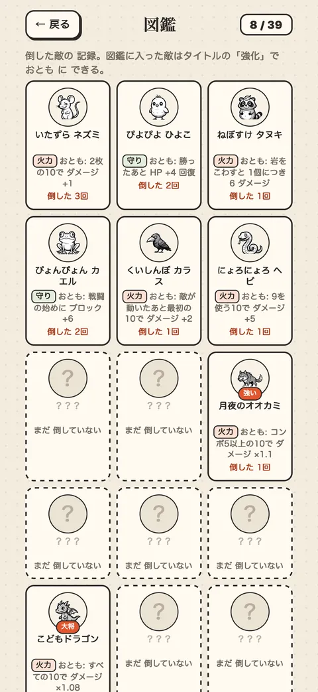

足し算パズルRPG（iPhone）
なぞって10
なぞって10を作って、
敵をたおそう。
となりの数字をなぞって、合計がちょうど10になったら攻撃。敵の次の行動を見ながら、どの10から消すかを考えるパズルRPGです。章を進んで、最後のボスをたおそう。
App Store で無料ダウンロード無料・広告あり／iPhone（iOS 18 以降）


アプリの画面
なぞって10とは？
なぞって10は、となりの数字タイルを一筆書きでなぞって、ちょうど10を作ると敵に攻撃。8つの章のダンジョンを進んで、最後のボスを倒すパズルRPG。倒した敵はおともに、ほしで強化。無料（広告あり）のiPhoneアプリ。
- 料金無料・広告あり
- 対応iPhone（iOS 18 以降）
- ジャンルパズル・脳トレ





こんな人におすすめ
- 足し算や数字のパズルが好きな人
- ひとりで、じっくり強くなっていくゲームが好きな人
- かわいくて少し不気味なモンスターが好きな人
遊び方は3ステップ
- なぞるとなりの数字タイル（ななめもOK）を、指をはなさずになぞります。
- 10で攻撃合計がちょうど10になると消えて、敵にダメージ。たくさんのタイルで作るほど強い攻撃に。
- 章をクリア階を進んで、最後のボスをたおすと章クリア。手に入れたほしで強くなれます。
特徴
- 10を作って攻撃2枚でも、5枚でも
- 8つの章森・洞窟・お城・海・雪・砂・空・お菓子の国
- おとも倒した敵が仲間に得意なことが1つずつ
- 図鑑モンスターを集める倒した敵が図鑑にのる
くわしい遊び方
となりの数字タイル（1〜9。上下左右とななめ）を、指をはなさずに一筆書きでなぞります。合計がちょうど10になると消えて、敵にダメージを与えます。敵は顔のまわりのゲージがたまると、見えている「次の行動」をします。
- 時間：最初の10を消すまで、また敵が動いたあとは、次の10を消すまで時間が止まっています。ゆっくり盤を見て考えられます
- 特別なタイル：★（ダメージ2倍）／盾（敵の攻撃をふせぐ）／ハート（HP 回復）。岩はとなりで10を作るとこわれます
- 冒険：章を選んで1階ずつ進み、最後のボスを倒すと章クリア。とちゅうにお店・休けい・たからばこもあります
- 強化：倒した敵や章のクリアで手に入る「ほし」で、ステータス・おとも・アイテムのレベルを上げられます
よくある質問
数字をなぞって10を作るゲームは？
なぞって10は、となりの数字タイル（ななめもOK）を一筆書きでなぞって、合計がちょうど10になると敵に攻撃できるパズルRPGです。8つの章を進んで、最後のボスを倒します。
無料ですか？
はい、無料でダウンロードして遊べます（広告あり）。App Store のページからどうぞ。
どの端末で使えますか？
iPhone（iOS 18 以降）で使えます。Android 版はありません。
10が作れない
盤にはいつも、なぞって作れる10が1つ以上あります。見つからないときは、ヒント（虫めがね）を使うと、いちばん枚数の少ない10が光ります。10がなくなったときは、盤が自動で作りなおされます。
なぞったのに消えない
1つ前のタイルのとなり（ななめもOK）へ、順に進む1本の道だけが選べます。ななめは、タイルのまん中の近くを通ったときだけ選ばれます。同じタイルは2回通れません。合計がちょうど10のときだけ消えます。
途中でやめたい
左上の一時停止から、タイトルにもどれます。冒険のとちゅうは保存されるので、タイトルの「続きから」で再開できます。
音や振動を止めたい
タイトル画面のボタンで、音・BGM・振動のオン・オフを切り替えられます。
記録を消したい
記録はこの iPhone の中にだけ保存しています。アプリを削除すると記録も消えます。
お問い合わせ
不具合やご要望は、メールでお知らせください。お使いの iPhone の機種と iOS のバージョンを書いていただけると助かります。